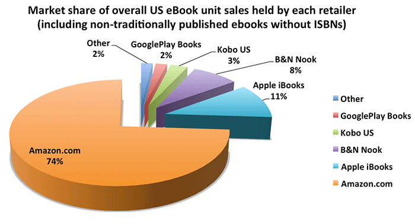
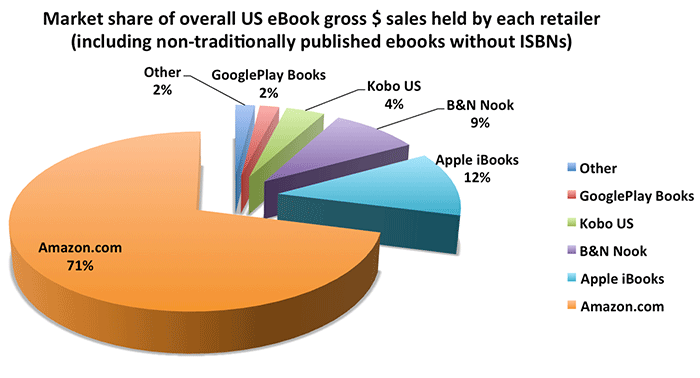

编辑：书伴
上周 Author Earnings 撰写了一篇很有意思的文章，对当前美国电子书市场进行了分析。
亚马逊的市场份额的占有率可能比以前所认为的要高得多，全美 74% 的电子书都是通过 Kindle 商店销售的。早在 2014 年的报道中亚马逊就占有了 65%，但是那还不包括独立出版电子书的销售。伴随着独立出版书籍纳入统计，亚马逊占有美国所有电子书购买量的 74%，以及在电子书上花费美元总数的 71%。

▲ 美国总市场占有率中每家零售商所持有的电子书单位销售量

▲ 美国总市场占有率中每家零售商所持有的购买电子书消费总额
统计显示，独立出版书籍在电子书市场中的比重比之前想象的还要大。 虽然大型出版商抱怨电子书的销售在下降，独立销售在上升（对于入门消费者，或许大型出版商应该重新考虑他们 $10~$15 的高价）。
根据这份报告可知，比所有传统出版商，独立作家和 Amazon-imprint 作者每天卖出更多的电子书。
在美国，亚马逊的电子书战略显然是把他们的出路推到了电子书之战前线。其余的电子书竞争对手持有的市场份额如此之小，很难看出他们中谁能给不断向前推进的 Kindle 商店带来什么真正的竞争。
你能看到为什么 Kobo 在内国不再做任何市场营销，甚至困扰到了任何一个销售他们的电子书阅读器的美国零售商。仅有的 3% 的市场占有率，几乎不值得花费成本和精力。
Barnes 和 Noble 有着 8% 的市场份额，当你这样去分析可能会吃惊：Nook 有着至少 4 倍于 Google Play 图书的市场份额，在当前电子书市场却只拼凑出 1~2% 的占有率（真正可怜的是，Google 多么强大，但事实上他们的电子书 APP 只是预装在每一部 Android 平板和智能手机上而已 ）
苹果排名第二，在美国电子书市场中有着 10~12% 的占有率。考虑到 iBooks 仅仅运行在 i 系列设备和 Mac 机上，这已经是相当高了。可以想象如果 iBook 允许运行在其他系统平台上，以及 Apple 提供专门的相当于 Kindle 的电子书阅读器，那占有率该会有多高。
除非苹果决定为 iBooks 开拓更多系统平台，或者某个更小的公司做出一些远远胜过电子书的事情，亚马逊几乎可以独占美国电子书市场，从现在到未来 5~10 年，可能只剩下 Kindle 这一种电子书形式。
查看 Author Earnings 的分析报告可以看到更多相关信息。
————————
来源：Has Amazon Already Won the eBook War in the US?